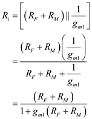
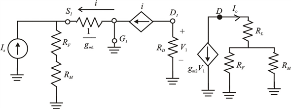
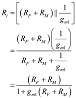
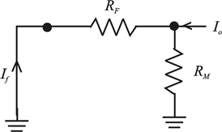

Derive the expression for the input resistance.

Thus, the input resistance of the feedback current amplifier  is.
is.
(a)
Refer to the circuit diagram of feedback current amplifier in Figure 10.8(b) in the textbook.
Draw the A –circuit for the feedback current amplifier.

Figure 1
Derive the expression for the input resistance.

Thus, the input resistance of the feedback current amplifier is.
Derive the expression for the gain of the amplifier.
From Figure 1, write the expression for voltage  using ohm’s law.
using ohm’s law.
From Figure 1, the current  using ohm’s law.
using ohm’s law.
Calculate the expression for the gain of the amplifier.
Since
Write the reduced expression for the gain of the amplifier.
Thus, the gain of the feedback current amplifier is.
is.
(b)
Draw  circuit for the current amplifier circuit.
circuit for the current amplifier circuit.

Figure 2
Thus, the feedback factor  of the current amplifier is.
of the current amplifier is.
(c)
Derive the expression for the loop gain of the amplifier.
Thus, the loop gain  of the amplifier is.
of the amplifier is.
(d)
The trans-conductance,
The resistances,
Calculate the gain of the amplifier.
Thus, the gain  of the amplifier is.
of the amplifier is.
Calculate the feedback factor of the amplifier.
Thus, the feedback factor  of the amplifier is.
of the amplifier is.
Calculate the loop gain of the amplifier.
Thus, the loop gain  of the amplifier is
of the amplifier is .
.
Calculate the gain with feedback.
Thus, the gain with feedback of the amplifier  is.
is.
Calculate the input resistance of the amplifier.
Thus, the input resistance  of the amplifier is
of the amplifier is .
.
Calculate the input resistance with feedback of the amplifier.
Thus, the input resistance with feedback of the amplifier  is
is  .
.
The output resistance,
The load resistance,
Determine the output resistance of the amplifier.
Substitute corresponding values.
Determine the output resistance with feedback.
Determine the output resistance as seen by the load resistance.
Thus, the output resistance  as seen by the load resistance is
as seen by the load resistance is .
.